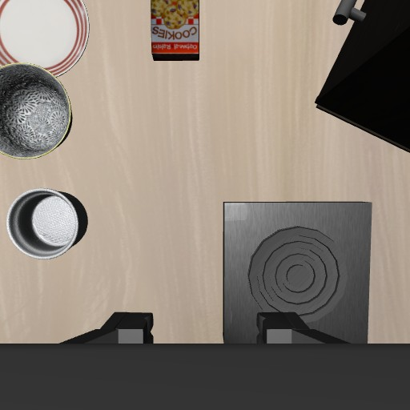

One framework, multiple policies
Use GPT vision and structured output, or run SmolVLA, Diffusion Policy and ACT in an isolated inference environment. Each adapter preserves its observation and action protocol.
Explore the architectureConnect model decisions to a physical feedback loop. Run GPT and local VLA policies in MuJoCo, inspect each action, and replay the complete episode.
Explore the recorded run interactively in your browser. Live simulation runs locally.

The model receives this robot-state execution feedback. TCP error compares the measured TCP position with its commanded target, not an object. Action execution completion does not mean task success.
Pause to read the model's saved action note. This page makes no model requests.
The policy sees images and robot state.
The evaluator stays separate.
RECORDED SKILLS
Select a task to play its recorded actions above. Each card is one independently verified episode, not a benchmark success rate.
Run time includes model planning and waiting, simulation execution and recording; environment initialization and policy loading are excluded. Video playback follows simulation time.
01 / THE FRAMEWORK
A shared interface for model inference, simulator control and recorded feedback. See what the policy asked for and what the robot actually did.
Dual-camera RGB Robot proprioception
SENSOR INPUTStructured GPT actions or a local VLA policy
POLICYValidate and track targets MuJoCo / LIBERO
LOCAL CONTROLNew images and motion Execution status and error
FEEDBACKUse GPT vision and structured output, or run SmolVLA, Diffusion Policy and ACT in an isolated inference environment. Each adapter preserves its observation and action protocol.
Explore the architectureStep once, pause after an action, or continue. Inspect the requested TCP target, actual displacement and controller error before allowing the next decision.
Use the control interfaceRecord the initial scene and every native control step. Review both cameras, action notes and the independent result, or export a continuous MP4.
Record and export02 / THE EPISODE
Actual simulator footage with an independent task result. This page plays saved media; it does not call a model or run a simulator.
Model and settings are loaded from the episode
Observation points from the same episode, paired with action notes. These are not continuous video.

Selected decision frames · Original order · Not continuous video
Loading run conditions
Task completion is determined by the independent simulator evaluator. One episode does not establish a benchmark success rate.
03 / MODEL EXAMPLES
Recorded examples on an official LIBERO task. Each row describes one run, with its own controller and inference setup.
| Model | Official result | Policy calls | Inference calls | Control steps | Configuration and scope |
|---|---|---|---|---|---|
| Loading recorded model examples | |||||
These are individual examples, not success-rate estimates. Budgets, action chunks and control methods differ; step counts and timings do not form a speed ranking.
Check configurations and results04 / GET STARTED
Start with simulation and manual control, then connect a model. The main application, LIBERO and VLA inference use separate environments.
macOS / Linux · Python 3.12
git clone https://github.com/Daniel-rmc/ManiLoop.git
cd ManiLoop
python3.12 -m venv .venv
.venv/bin/python -m pip install -r requirements.txt
.venv/bin/python -m maniloop demoOpen 127.0.0.1:8765 for the default tabletop demo. Starting the simulator and using manual controls requires no model key. Use another terminal, or stop the demo with Ctrl+C, before installing LIBERO.
Full setup and Windows instructionsA separate Python 3.10 simulation environment
.venv/bin/python -m pip install uv
.venv/bin/python scripts/setup_libero.py \
--uv .venv/bin/uv
.venv/bin/python -m maniloop demo \
--backend libero --port 8767Open 127.0.0.1:8767 on your machine. Git, network access and a supported graphics setup are required. VLA weights are optional.
Requirements and headless setupConnect an API service with image and structured-output support, or use the ChatGPT login channel of a recent official Codex CLI. Run diagnostics, then try a small movement. Model requests use your provider or account quota.
Connect your model. Inspect its actions.
Questions and contributions